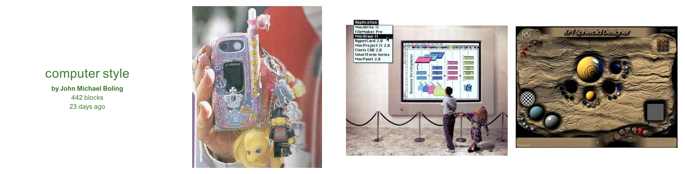
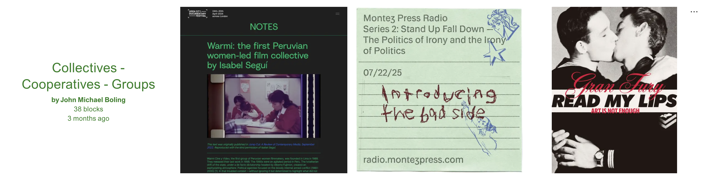
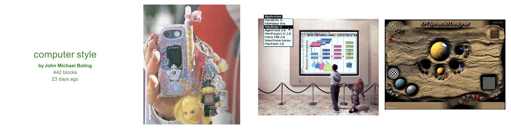
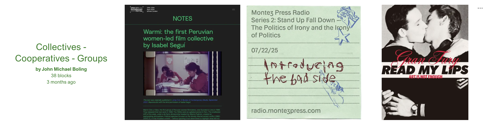

JMB
John Michael Boling
Overview
John Michael Boling’s work often plays with web vernacular, catalogs of links, and the deadpan aesthetics of early internet art. This page collects a few reference points and a primary external index of projects.
Gallery
 


